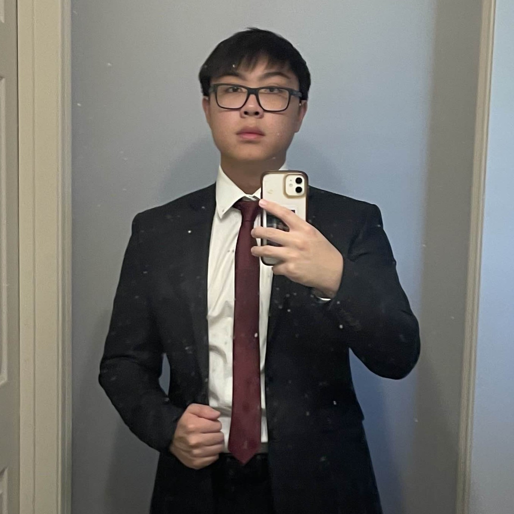
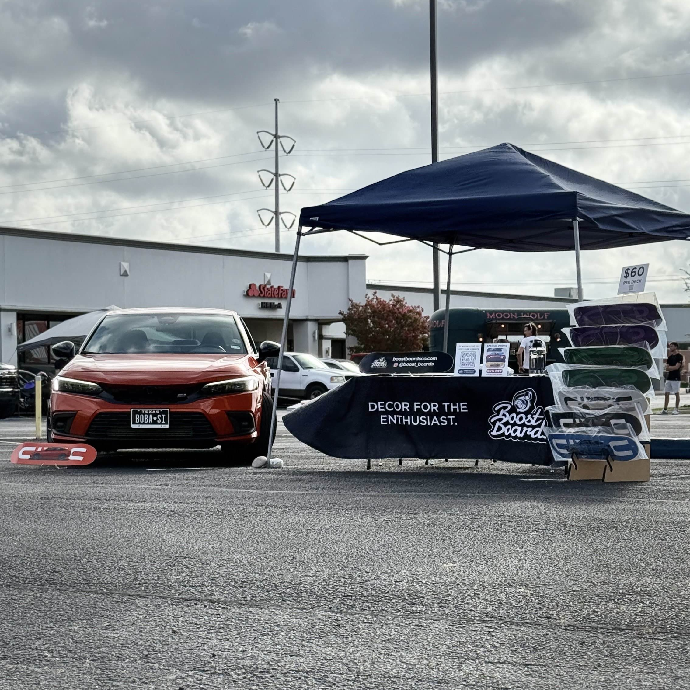

|  |
Hi! I'm Tristan.
|
Always Trying New Things.I think its important to try new things. The more uncomfortable you feel about trying something new, the more you can learn from the experience. During my time as a student, I have ventured off into many new experiences with just the willingness to try my best and learn as I go along. With this motivation, I have started my own side business, interned at the world's largest defense contractor as a SWE, modified my own car, collaborated on many projects, made new connections and expanded my network. Through these experiences I've been able to make an impact on not only myself, but also on those around me. |
 |